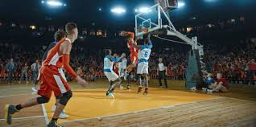

El **baloncesto** es un deporte de equipo que se juega entre dos conjuntos de cinco jugadores en cancha. Su objetivo principal es anotar puntos introduciendo el balón en el aro del equipo contrario. Fue inventado en 1891 por James Naismith en Springfield. El primer partido oficial se jugó en el gimnasio de la Springfield College. Originalmente se utilizaban cestas de durazno como aros. El tablero fue añadido posteriormente para evitar interferencias del público. El deporte se expandió rápidamente por Estados Unidos y luego a nivel mundial. La organización internacional que regula el baloncesto es la Federación Internacional de Baloncesto. En Estados Unidos, la liga profesional más importante es la National Basketball Association. Un partido oficial FIBA se compone de cuatro períodos de 10 minutos cada uno. En la NBA, cada período dura 12 minutos. El equipo que anota más puntos al finalizar el tiempo reglamentario gana el partido. Las canastas valen dos puntos dentro del arco y tres puntos fuera de la línea de triple. Los tiros libres valen un punto cada uno. El balón debe ser botado mientras el jugador se desplaza, acción conocida como drible. No se permite caminar con el balón sin botarlo, lo que se denomina pasos. El reloj de posesión limita el tiempo de ataque a 24 segundos. Las posiciones tradicionales son base, escolta, alero, ala-pívot y pívot. El base organiza el juego ofensivo del equipo. El pívot suele ser el jugador más alto y juega cerca del aro. El baloncesto requiere habilidades físicas como velocidad, coordinación y resistencia. También exige capacidades tácticas y trabajo en equipo. Existen competiciones internacionales como la Copa del Mundo FIBA. El baloncesto olímpico forma parte de los Juegos Olímpicos desde 1936. Algunos jugadores históricos destacados incluyen a Michael Jordan. Otro jugador influyente es LeBron James. En el ámbito femenino, la liga profesional en EE. UU. es la Women's National Basketball Association. El baloncesto femenino olímpico comenzó en 1976. La cancha mide 28 metros de largo por 15 metros de ancho según normativa FIBA. El aro se encuentra a 3.05 metros de altura. El balón oficial varía de tamaño según la categoría y el género. El deporte promueve valores como disciplina, respeto y cooperación. Actualmente es uno de los deportes más practicados y seguidos en el mundo. **Referencias (formato APA):** Fédération Internationale de Basketball (FIBA). (2023). *Official Basketball Rules 2023*. FIBA. National Basketball Association. (2023). *NBA Official Rulebook*. NBA Publishing. Naismith, J. (1941). *Basketball: Its origin and development*. Association Press.
